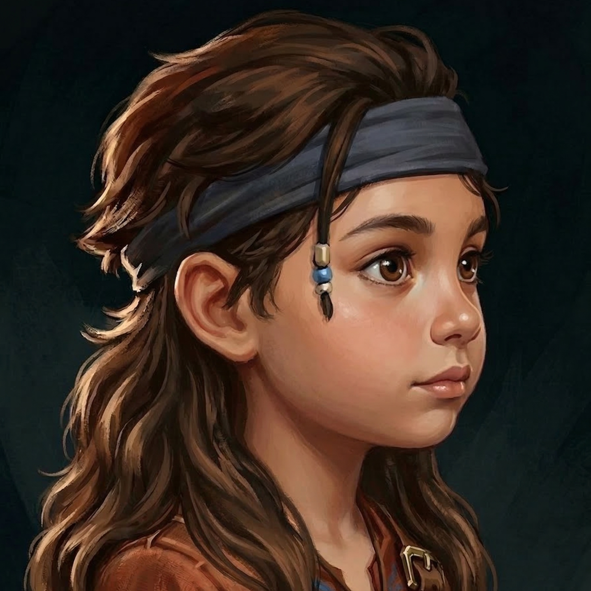
Nome: Anitta
Local: Zaun
Ocupação: Criança
Filha de seis anos de Loren e Maria. É amiga de Isha e adora jogar futebol com os vizinhos, tendo pedido para levar seus amigos à festa em Piltover.

Nome: Caitlyn Kiramman (Cupcake)
Local: Piltover
Ocupação: Socialite / Herdeira
Herdeira do Grupo de Energia Sustentável Kiramman e socialite de Piltover. Vive um dilema entre manter as aparências exigidas pela mãe e seus próprios desejos amorosos. Ficou instantaneamente atraída por Vi após um esbarrão na festa infantil.

Nome: Cassandra Kiramman (Júnior)
Local: Piltover
Ocupação: Chefe dos negócios da família
Mãe de Caitlyn e atual controladora dos negócios e da imagem da família Kiramman. É rigorosa, preocupada com a mídia e exige que Caitlyn participe de eventos sociais e cuide dos sobrinhos.

Nome: Divania Juniper (Diva de Zaun)
Local: Água Mansa (Prisão)
Ocupação: Cantora de rock / Detenta
Namorada de Vi e cantora de uma banda de rock. Foi presa em Água Mansa após um show clandestino terminar em vandalismo e usa uma prótese na perna. Vi aceitou os abusos de Margot na cadeia para mantê-la protegida.
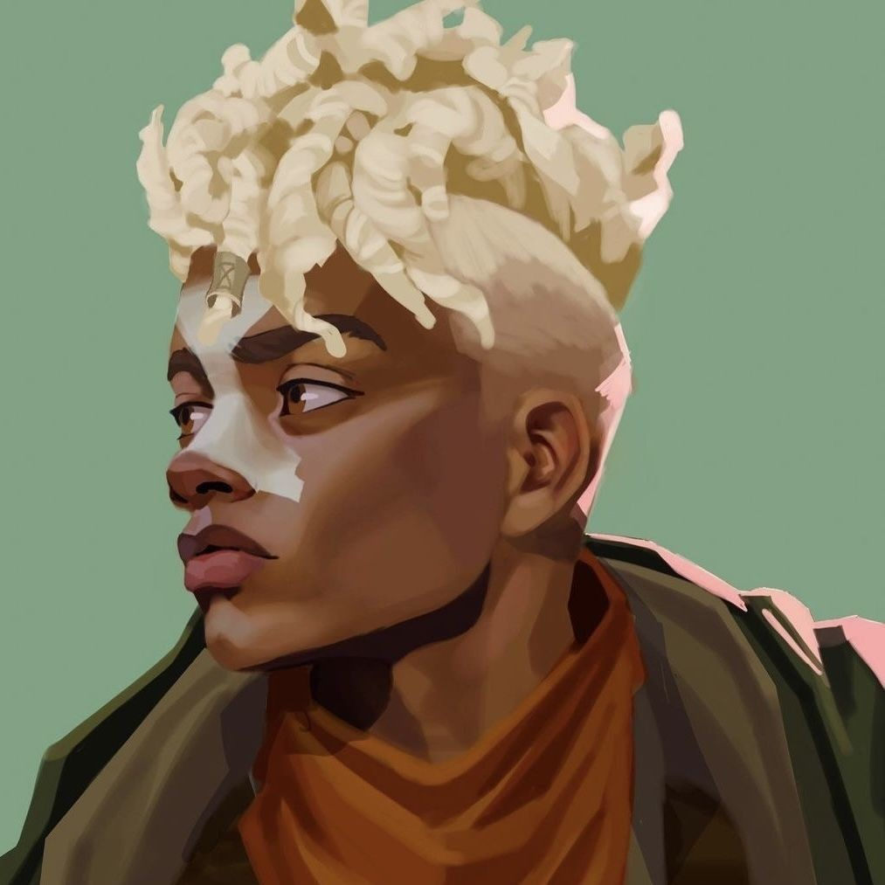
Nome: Ekko (Chefinho)
Local: Zaun
Ocupação: Amigo de Jinx e Vi
Amigo de longa data de Vi e Jinx. É namorado de Ezreal e se mostra o mais sensato, puritano e contido diante das brincadeiras pesadas de Jinx e Luxanna.
Nome: Eleonor Kiramman
Local: Piltover
Ocupação: Criança
Prima pequena de Caitlyn, apelidada de "Chata Kiramman". É uma criança difícil e manipuladora que adora barganhar por doces e privilégios para obedecer.
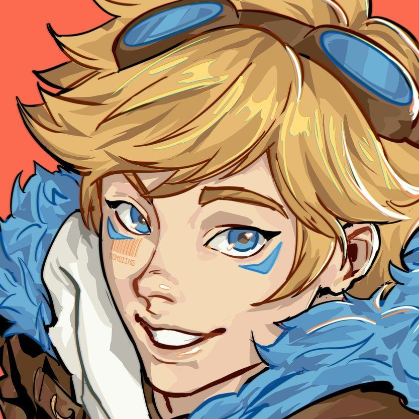
Nome: Ezreal
Local: Piltover / Zaun
Ocupação: Namorado de Ekko
Atual namorado de Ekko e ex-namorado de Luxanna. Continua amigo de Luxanna, o que confunde Jinx sobre a dinâmica deles.
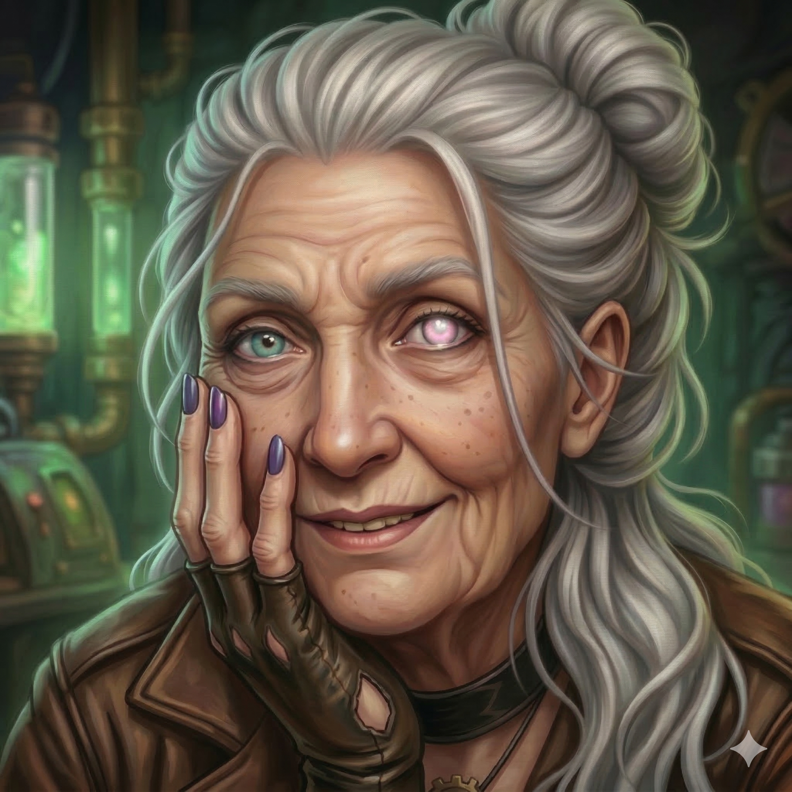
Nome: Felícia (Abuela)
Local: Zaun
Ocupação: Aposentada
Avó materna da Vi e Jinx, conhecida por sua doçura e vício em novelas mexicanas antigas. É o pilar amoroso da família, tendo acolhido Vi após o despejo sem julgamentos.

Nome: Isha
Local: Zaun
Ocupação: Escoteira / Estudante
Menina de rua adotada por Jinx, tornando-se sobrinha-irmã de Vi. Tem cerca de oito anos, é muito inteligente e desenvolveu mutismo seletivo, comunicando-se fluentemente por linguagem de sinais.
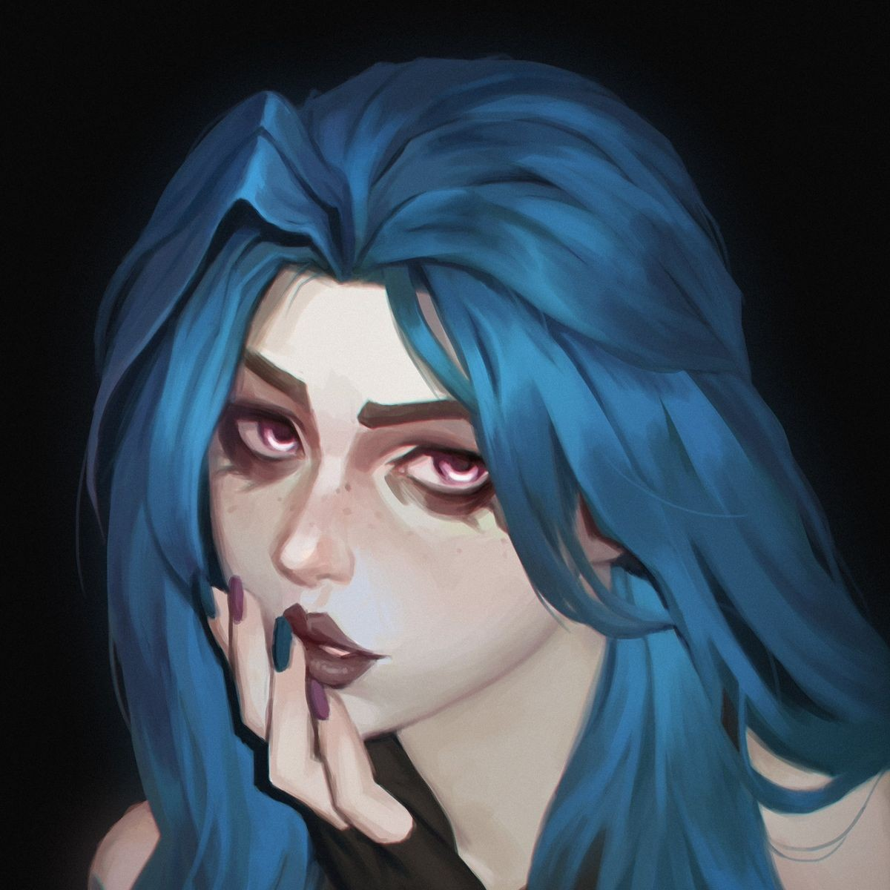
Nome: Jinx (Powder)
Local: Zaun
Ocupação: Trabalhadora de demolidora
Irmã caçula de Vi e mãe adotiva de Isha. Trabalha em uma demolidora, tem uma personalidade caótica, ciumenta e recentemente assumiu seus sentimentos intensos por Luxanna.
Nome: Kevin
Local: Zaun
Ocupação: Estudante / Pré-adolescente
Pré-adolescente vizinho de Anitta que pegou carona para a festa em Piltover. Seu ceticismo sobre lobisomens irritou Vi, que lhe deu um choque de realidade sobre a prisão.

Nome: Loren
Local: Zaun
Ocupação: Trabalhador
Amigo leal de Vi que alugou o sobrado nos fundos da casa da Abuela. Luta contra o alcoolismo e a depressão devido aos abandonos de sua esposa, Maria.
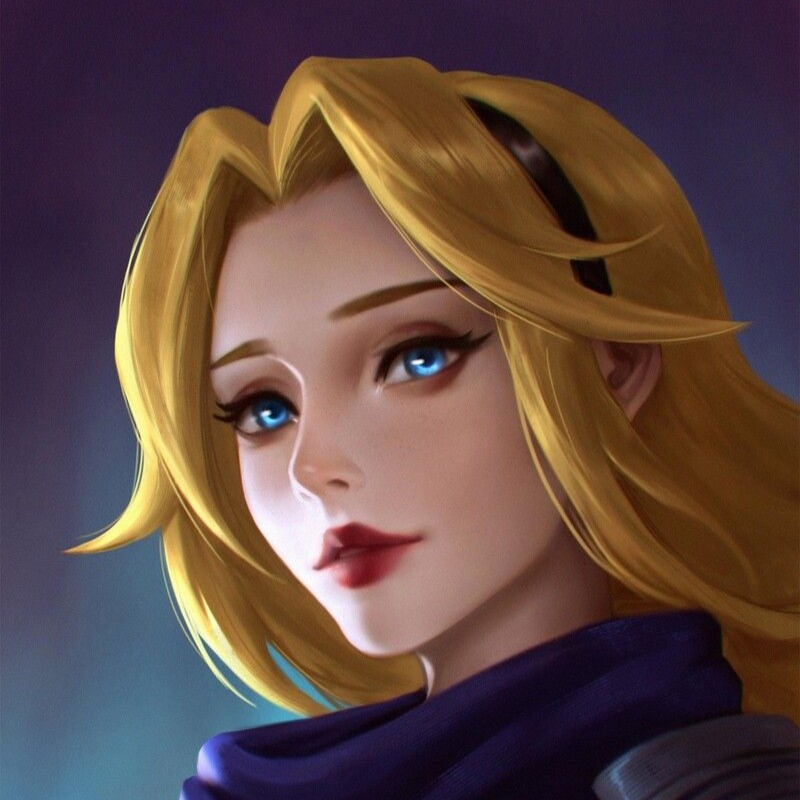
Nome: Luxanna Stemmaguarda (Lux)
Local: Demacia / Piltover
Ocupação: Estudante universitária
Estudante de Demacia que mora em Piltover. É amiga de Jinx, nutre sentimentos profundos por ela e é surpreendentemente desinibida intimamente.
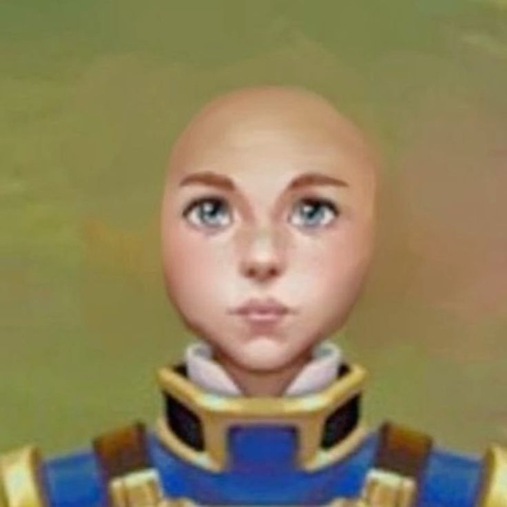
Nome: Maddie
Local: Piltover
Ocupação: Assessora
Assessora de imprensa e parceira casual de Caitlyn. Tem um perfil submisso na cama, além de ser intensamente carente e emocionalmente dependente de Caitlyn.
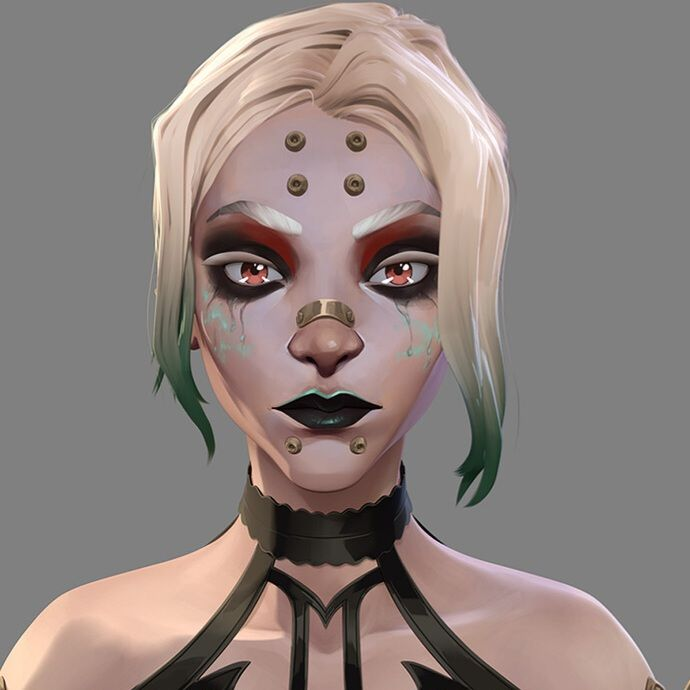
Nome: Margot (Madrinha E)
Local: Água Mansa (Prisão)
Ocupação: Baronesa Química / Dona da Vyx
Rica e poderosa Baronesa Química que comandava seus negócios de dentro da prisão. Obcecada por Vi, usou a fragilidade de Juniper para chantagear a protagonista.
Nome: Maria
Local: Zaun
Ocupação: Desconhecida
Esposa instável de Loren. Costuma abandoná-lo frequentemente por outros homens, causando grande sofrimento a ele.

Nome: Sarah Fortune
Local: Piltover
Ocupação: Caçadora de recompensas
Caçadora de recompensas de Piltover e amiga íntima com benefícios de Caitlyn. Serve como confidente sobre a misteriosa mulher de Zaun.
Nome: Sebastian Kiramman
Local: Piltover
Ocupação: Criança
Primo de Caitlyn. Foi subornado com uma espingarda Nerf para brincar com Isha na festa e surpreendeu a todos ao se comunicar fluentemente em Libras com a menina.
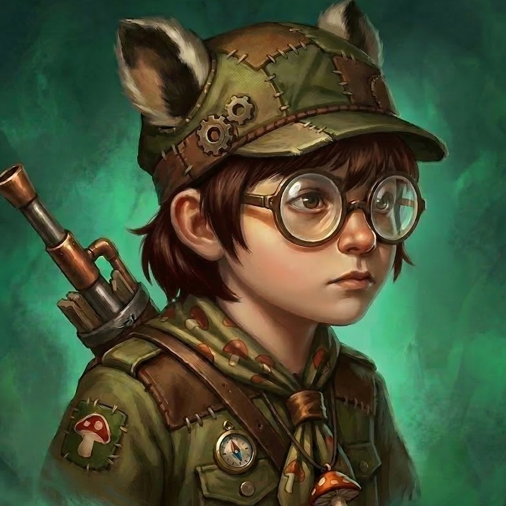
Nome: oddy
Local: Zaun
Ocupação: Criança
Menino com cara de nerd escoteiro que é vizinho de Anitta. Foi à festa fantasiado de Teemo.
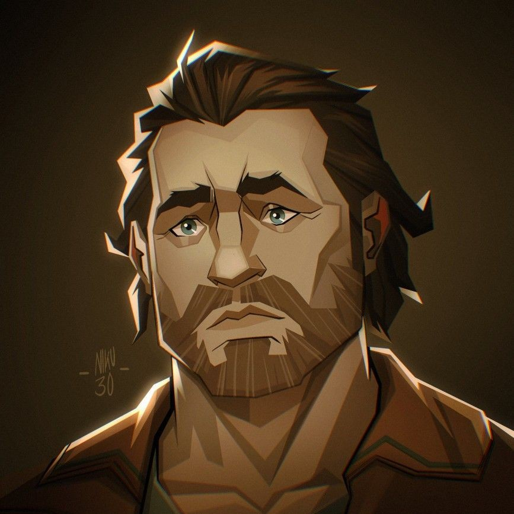
Nome: Vander (Warwick)
Local: Zaun
Ocupação: Policial aposentado / Dono de bar
Pai de Vi e Jinx, ex-policial que perdeu um braço e dono do bar "Última Gota". Vi guarda profundo rancor dele por não tê-la protegido quando foi presa.
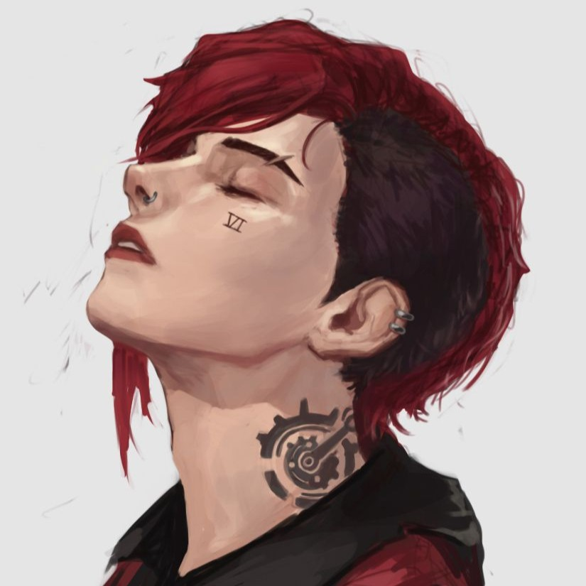
Nome: Violet (Vi)
Local: Zaun
Ocupação: Desempregada / Ex-detenta
Protagonista da história e ex-detenta que passou sete anos presa injustamente. Desempregada e despejada, luta para reconstruir sua vida com a ajuda de sua família.